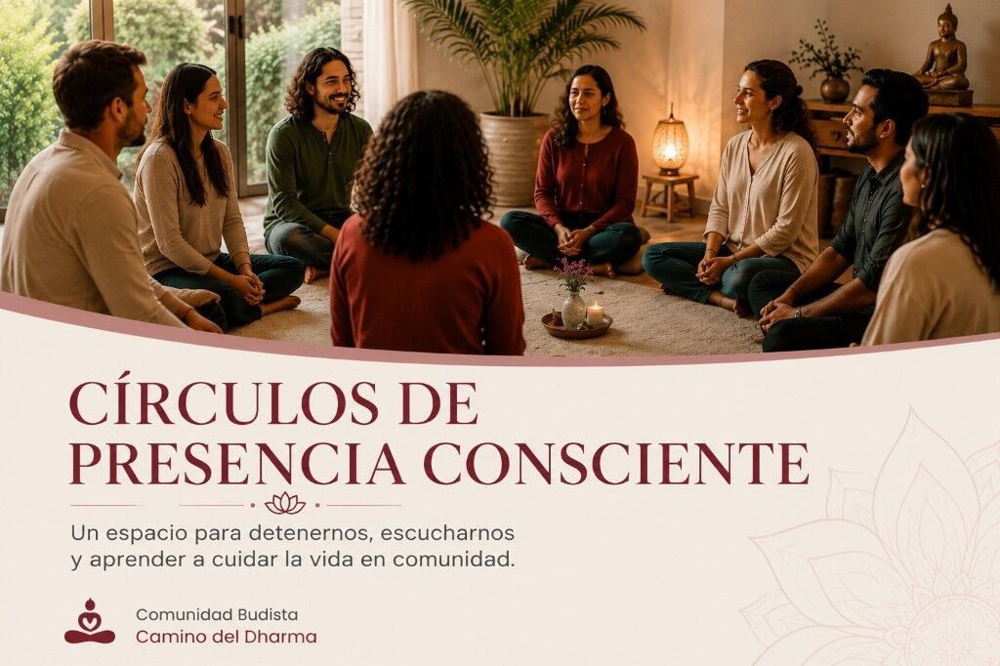

Círculos de Presencia Consciente
Un espacio para detenernos, escucharnos y aprender a cuidar la vida en comunidad.

Círculos de Presencia Consciente es un proceso de formación dirigido a personas adultas de Bogotá y Cali que deseen fortalecer su bienestar emocional, cultivar una mayor presencia en la vida cotidiana y aprender herramientas de escucha y cuidado comunitario.
Durante el curso exploraremos prácticas sencillas y aplicables para reconocer nuestras emociones, relacionarnos de una manera más consciente con el estrés y construir espacios seguros de escucha y apoyo mutuo.
No necesitas tener experiencia previa en meditación ni pertenecer a una tradición espiritual.
Quiero preinscribirme (abre en nueva pestaña)
¿Qué encontrarás en este proceso?
A lo largo de seis sesiones virtuales y un encuentro presencial en tu ciudad, abordaremos:
- Presencia consciente y atención en la vida cotidiana.
- Herramientas básicas de regulación emocional.
- Reconocimiento del estrés y el agotamiento.
- Autocompasión y cuidado personal.
- Relaciones y escucha consciente.
- Redes de apoyo y resiliencia comunitaria.
No se trata de conferencias aisladas. Es un proceso progresivo en el que cada sesión prepara la siguiente e integra momentos de aprendizaje, práctica y participación.
¿A quién está dirigido?
A personas mayores de 18 años que vivan en Bogotá o Cali y tengan interés en participar en un proceso de bienestar emocional, escucha y fortalecimiento comunitario.
El curso puede ser especialmente valioso para:
- Personas interesadas en su bienestar y crecimiento personal.
- Líderes y lideresas comunitarias.
- Mujeres cuidadoras y personas que acompañan a otros.
- Docentes y profesionales del ámbito social.
- Integrantes de fundaciones, colectivos y organizaciones.
- Servidores públicos y coordinadores de proyectos comunitarios.
- Personas que experimentan estrés o agotamiento emocional.
Círculos de Presencia Consciente tiene un enfoque preventivo, formativo y comunitario. No es un proceso de psicoterapia ni reemplaza la atención médica, psicológica o psiquiátrica cuando esta sea necesaria.
Becas completas
El curso ofrece un número limitado de becas completas para personas de Bogotá y Cali.
Las personas seleccionadas tendrán acceso a:
- Seis sesiones virtuales.
- Un encuentro presencial en su ciudad.
- Orientación para el uso de Google Classroom.
- Materiales de formación.
- Certificación, de acuerdo con los criterios de participación establecidos.
La preinscripción no garantiza automáticamente la asignación de una beca. Las personas interesadas serán invitadas a una sesión virtual de bienvenida, en la que conocerán la metodología, el calendario y los compromisos del curso. Después podrán decidir si desean completar su inscripción definitiva.
Cronograma
Todas las actividades virtuales se realizarán a las 7:00 p. m., hora de Colombia.
Sesión virtual de bienvenida
Jueves 3 de septiembre de 2026
7:00 p. m.
Durante este encuentro conocerás la metodología, el cronograma y los compromisos del curso. Al finalizar, las personas interesadas podrán realizar su inscripción definitiva y continuar con el proceso de asignación de las becas.
Orientación sobre Google Classroom
Jueves 10 de septiembre de 2026
7:00 p. m.
Esta sesión permitirá conocer el funcionamiento de la plataforma, acceder a los materiales y resolver inquietudes técnicas antes de comenzar el curso.
Sesiones virtuales
- Sesión 1: martes 15 de septiembre, 7:00 p. m.
- Sesión 2: jueves 17 de septiembre, 7:00 p. m.
- Sesión 3: martes 22 de septiembre, 7:00 p. m.
- Sesión 4: jueves 24 de septiembre, 7:00 p. m.
- Sesión 5: martes 29 de septiembre, 7:00 p. m.
- Sesión 6: jueves 1 de octubre, 7:00 p. m.
Encuentro presencial en Bogotá
Sábado 17 de octubre de 2026
8:00 a. m. a 12:00 m.
Encuentro presencial en Cali
Sábado 24 de octubre de 2026
8:00 a. m. a 12:00 m.
Cada participante asistirá únicamente al encuentro presencial correspondiente a la ciudad seleccionada. El lugar será informado oportunamente a las personas admitidas.
¿Cómo participar?
-
Realiza tu preinscripción
Completa el formulario con tus datos básicos y selecciona la ciudad en la que participarías.
-
Participa en la sesión de bienvenida
Recibirás por WhatsApp o correo electrónico la invitación a una sesión virtual en la que conocerás todos los detalles del curso.
-
Completa tu inscripción
Al finalizar la bienvenida, las personas interesadas recibirán el enlace para completar la inscripción definitiva.
-
Confirma tu beca
Las personas admitidas recibirán la confirmación de su beca y la información para ingresar a Google Classroom.
-
Comienza el proceso
Participarás en las seis sesiones virtuales y en el encuentro presencial correspondiente a tu ciudad.
Realizar mi preinscripción (abre en nueva pestaña)
Preguntas frecuentes
¿El curso tiene algún costo?
No. Las personas admitidas recibirán una beca completa que cubre su participación en el proceso, los materiales de formación y la certificación.
¿La preinscripción garantiza mi cupo?
No. La preinscripción permite manifestar tu interés y recibir la invitación a la sesión de bienvenida. La beca se confirmará después de completar el proceso de inscripción definitiva.
¿Debo tener experiencia en meditación?
No. El curso está diseñado para personas con o sin experiencia previa.
¿Puedo participar si vivo en otra ciudad?
Sí. Aunque el proceso está dirigido principalmente a personas de Bogotá y Cali, puedes participar si resides en otra ciudad y te comprometes a asistir al encuentro presencial en la ciudad que selecciones al momento de inscribirte.
¿Cuántas actividades incluye el proceso?
El proceso incluye una sesión de bienvenida, una orientación sobre Google Classroom, seis sesiones virtuales y un encuentro presencial en Bogotá o Cali, según la ciudad seleccionada.
¿Recibiré un certificado?
Sí. La certificación estará sujeta al cumplimiento de los criterios de asistencia y participación informados durante la sesión de bienvenida.
¿Qué ocurre si no puedo asistir a todas las sesiones?
La beca implica un compromiso con el proceso completo. Si conoces anticipadamente que no podrás participar en la mayoría de las sesiones o en el encuentro presencial, te recomendamos no formalizar todavía la inscripción y permitir que otra persona pueda aprovechar el cupo.
Una oportunidad para aprender a cuidarnos juntos
En medio de la prisa cotidiana, muchas personas necesitan un espacio donde puedan detenerse, reconocer lo que están viviendo y sentirse escuchadas.
Círculos de Presencia Consciente nace como una invitación a recuperar ese espacio y a descubrir que el cuidado emocional no tiene que vivirse en soledad.
Los cupos son limitados.
Quiero preinscribirme (abre en nueva pestaña) Ver evento
Para resolver inquietudes puedes comunicarte con la Comunidad Buddhista Camino del Dharma:
WhatsApp: 320 662 7608 (abre en nueva pestaña)
Correo: caminodeldharma1@gmail.com
Nota: La programación, los contenidos y las condiciones operativas del curso podrán ser revisados o ajustados de acuerdo con las necesidades pedagógicas y logísticas del proceso. Cualquier cambio será informado oportunamente a las personas participantes.
Nota · Comunidad Camino del Dharma Círculos de Presencia Consciente Un espacio para detenernos, escucharnos y aprender a cuidar la vida en comunidad. {{SHARE_URL}} Nota · Comunidad Camino del Dharma Círculos de Presencia Consciente Nota · Comunidad Camino del Dharma Círculos de Presencia Consciente Un espacio para detenernos, escucharnos y aprender a cuidar la vida en comunidad.